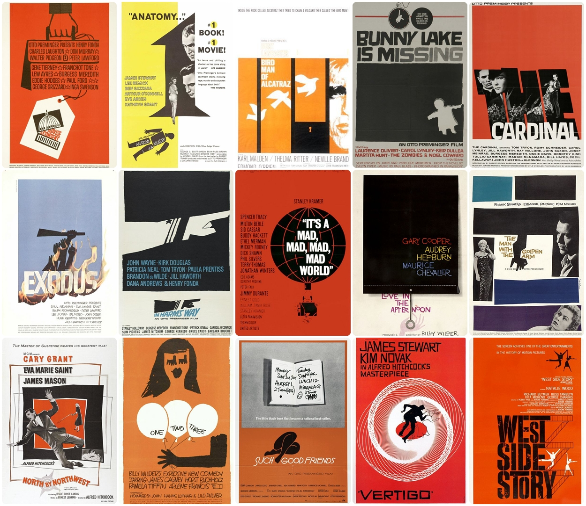
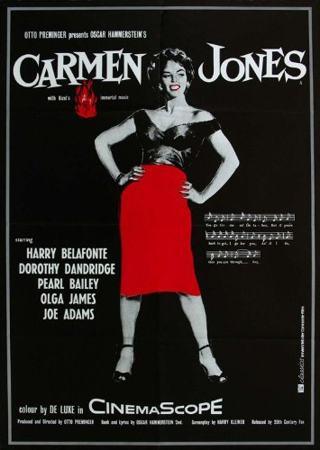
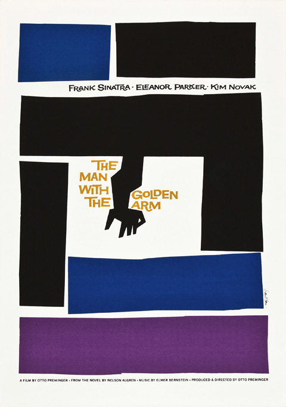
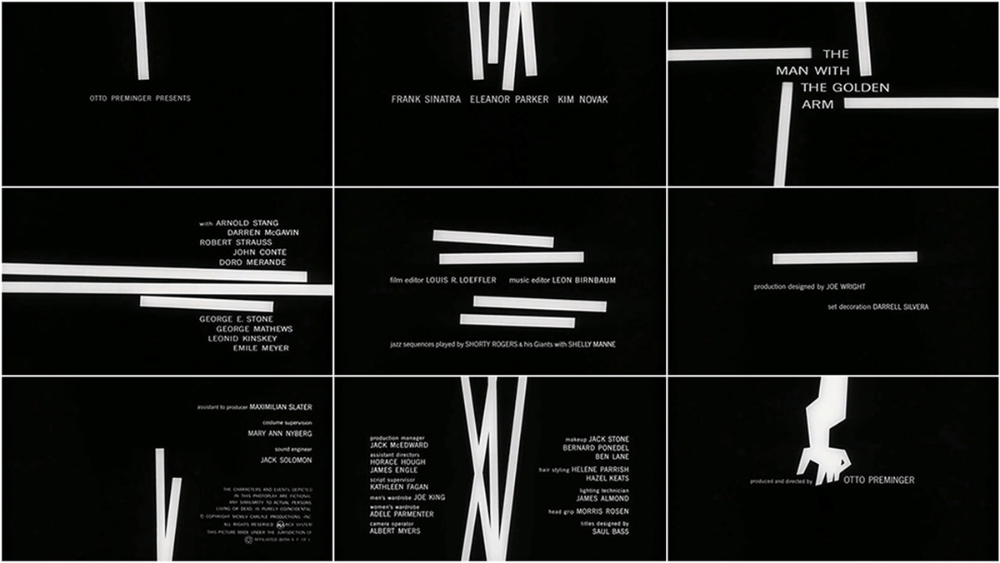
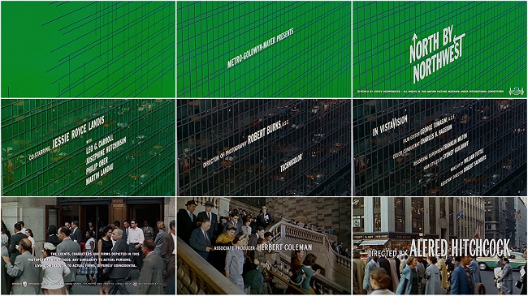

Saul Bass
Saul Bass is arguably one of the most influential American graphic designers of his time but what made him?

About Bass
Saul Bass was born in The Bronx, New York on 8th May 1920 to Eastern European Jewish immigrant parents. He began drawing from an early age and went on to graduate from James Monroe high school. He attended the Art students League in Manhattan part-time until going on to attend night classes at Brooklyn college with György Kepes (a famous Hungarian designer). After completing his studies, he worked as a freelance designer before moving to Hollywood and becoming a commercial artist.
In the 1940’s Bass began his time in Hollywood. He started to create movie posters, corporate logos and later went on to make movie title sequences. In 1952 he established his own firm “Saul Bass and Associates”.
Film Posters
Bass worked alongside many prominent filmmakers such as; Alfred Hitchcock, Otto Perminger, Billy Wilder, Stanley Kubrick and Martin Scorsese.
Bass’ main goal was to distil the movies main ideas, themes and tone into as simple of an image as possible. Or in other words symbolise and summarise. To have a film illustrated by one image was a very daring notion in the 50’s. Most movies were illustrated in a “romantic” style by the use of a wide range of colours and appealing illustrations from a snapshot of the movie in an attempt for the audience to be attracted to the poster and go and see the film.
Bass’ major break was when he designed the film poster for “Carmen Jones”. The poster he designed was shockingly simple, with a still shot of actress Dorothy Dandridge in black and white. With a hint of red used on her lips and skirt to reflect the fiery, seductive character within the film. Bass wanted to break the “romantic” style used in film posters and this poster became a big part of achieving that.
Bass became known for his simplistic, minimal posters. The characteristics of his posters often include a limited colour palette made up of 3 or 4 colours, typically black/white and a bright contrasting colour for example the colour red. He also often uses 1 dominant colour background colour accompanied with simple black shapes over it. Bass also frequently and confidently uses negative space to create impact. The use of image and colour combined with negative space stops the poster from becoming too busy and creates a simplistic yet effective poster.
Another film poster Bass became well known for was “The man with the golden arm” Directed by Otto Perminger. The film is about a jazz drummers struggle with heroin and Bass designed a simple yet shocking poster for the film. The poster includes a crooked arm surrounded by san-serif type and geometric blocks of colour - an iconic poster which symbolised the movie. Preminger who was so impressed with Bass’ ability to turn the movie and title into visual substance also asked him to create the title sequence for the film.
Film Title Sequences
A film title sequence is the method by which films or television programs present their title and key production and cast members before the film starts.
When Perminger asked bass to create the title sequence for his films Bass saw it as an opportunity to create a title sequence which would enhance the experience for the audience and contribute to the mood and theme of the movie within the opening moments. Bass aimed to take the ordinary and make it extraordinary.
Bass became widely known after his title sequence for “The man with the golden arm”. He designed the sequence as a series of white blocks appearing and disappearing on the black screen forming abstract patterns, followed by the crooked arm. The contrast of the black and white used also adds to the intensity of the title sequence. The abstract, disjointed patterns followed by the arm were used with the intent to visualise the disjointed life of the addict. The use of the slightly abstract arm helps to distance the image from the harsh realities of injecting heroin but is still able to convey the intended message. This title sequence was innovative and revolutionary and had a lasting effect on the film industry. Perminger was so confident with the title sequence he made sure that the film was accompanied with a note to tell the projectionist to open the curtains before staring the film.
Another famous title sequence which Bass created was for the film “North by Northwest”, a film based around the mistaken identity of a wealthy man played by Cary Grant, who is kidnapped and chased. Bass symbolised the film plot by opening the title sequence with a canvas of forest green which in then entrapped in a series of intersecting lines and followed by collating the sans serif titles into vertical columns rising and falling as though tethered to one another. This was the first sequence to use kinetic type and once again was revolutionary. The style Bass used for this sequence was clean and minimal and he went on to apply the same style to his next two projects; ocean’s eleven and Psycho.
Corporate logos

Amongst designing film posters and title sequences Bass also created a number of corporate logos, considered to be so ahead of their time that many have been kept the same after many years. The average lifespan of a logo designed by Saul Bass is estimated to be around 34 years, which is exceedingly impressive as the design world moves so fast and designs are ever changing and often outdated.
Bass created logos for many company’s such as; Quaker oats, AT & T, Kleenex, Girl scouts, Geffen records, Frontier Airlines and United Way. Once again when creating corporate logos Bass applied his signature simplistic, minimal style meaning the logos are almost timeless and are greatly admired by the graphic design community. Although many have been tweaked over the years the designs are almost intact and still remain largely inspired by the Bass style.
The logo which Bass designed for the American Girl Scouts shows the side profile of three females within a four-leaf clover, using only green and white and the use of negative space. The design is clean and minimal and was kept the same until 2010. In 2010 the logo was slightly tweaked - changing the spacing of the three silhouettes, adding slightly more detail to the hair of one and altering the shape of one of the leaves. The shade of the logo was also slightly changed to a lighter shade. The changes made to the logo are so minor that to tell the difference both logos would have to be compared side-by-side, this further highlights the lengthy life-span of one of Bass’ logos and his ability to create logos beyond their time.
The logo Bass designed for Geffen Records has also with stood the test of time, the original logo is a sphere with lines through it and was black and white. The new logo which was created in 2003 shows the exact same logo but has been altered to look more 3D and tone has been added to create the illusion of shadows and highlights. This again shows the brilliant work of Bass as the newly altered logo is just a slightly modernised version of Bass’ work.
Impact
“A title sequence is the method by which films or television programs present their title and key production and cast members, utilizing conceptual visuals and sound. It typically includes (or begins) the text of the opening credits and helps establish the setting and tone of the program. It may consist of live action, animation, music, still images, and/or graphics. In some films, the title sequence is preceded by a cold open.”
Before Saul Bass a title sequence was mandatory, and they were usually drab and static with no visual pleasing element. The title sequences were often projected onto the curtains in the film theatre and they were not usually raised until the opening scene as they were deemed so unimportant. Saul Bass revolutionised the role of the title sequences in film, making them part of the whole film experience and as way to introduce the film in a fun visual way. He has changed the whole definition of a title sequence.
Bass’ lasting influence generates clean and minimalist visual designs throughout the design world today. Bass once said, “if it’s simple simple, it’s boring… we try for the idea that is so simple that it will make you think and rethink”, this idea lead to Bass creating numerous corporate identities and leaving a permanent mark on the design world.
“if it’s simple simple, it’s boring… we try for the idea that is so simple that it will make you think and rethink” —Saul Bass
Bass received a number or awards for his work such as; Academy Award, Best documentary, short subjects, honorary doctorate and Otis college of art and design. The recognition which Bass received is another indication of the revolutionary designer he was as he was so ahead of his time. Bass has left a huge footprint on the design industry and his style known as “Saul Bass style” is studied by all graphic designers and will never go unappreciated.
Bibliography
Web Links
- https://en.wikipedia.org/wiki/Saul_Bass
- https://www.artofthetitle.com/designer/saul-bass/
- https://99designs.co.uk/blog/famous-design/saul-bass-graphic-designer-of-a-century/
- http://www.historygraphicdesign.com/the-age-of-information/the-new-york-school/182-saul-bass
Books
- Saul Bass: A life in Film & Design